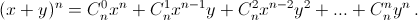

Prove the validity of the following formula 
In order to obtain the monomial $x^{n-k}y^k$ when expanding the brackets of the product $(x + y) (x + y) ... (x + y)$, we have to take the term y from k brackets and the other from x. Therefore, the coefficient of $x^{n-k}y^k$ is equal to the number of ways to choose k brackets from n, that is $C_n^k$.
See the solution above.